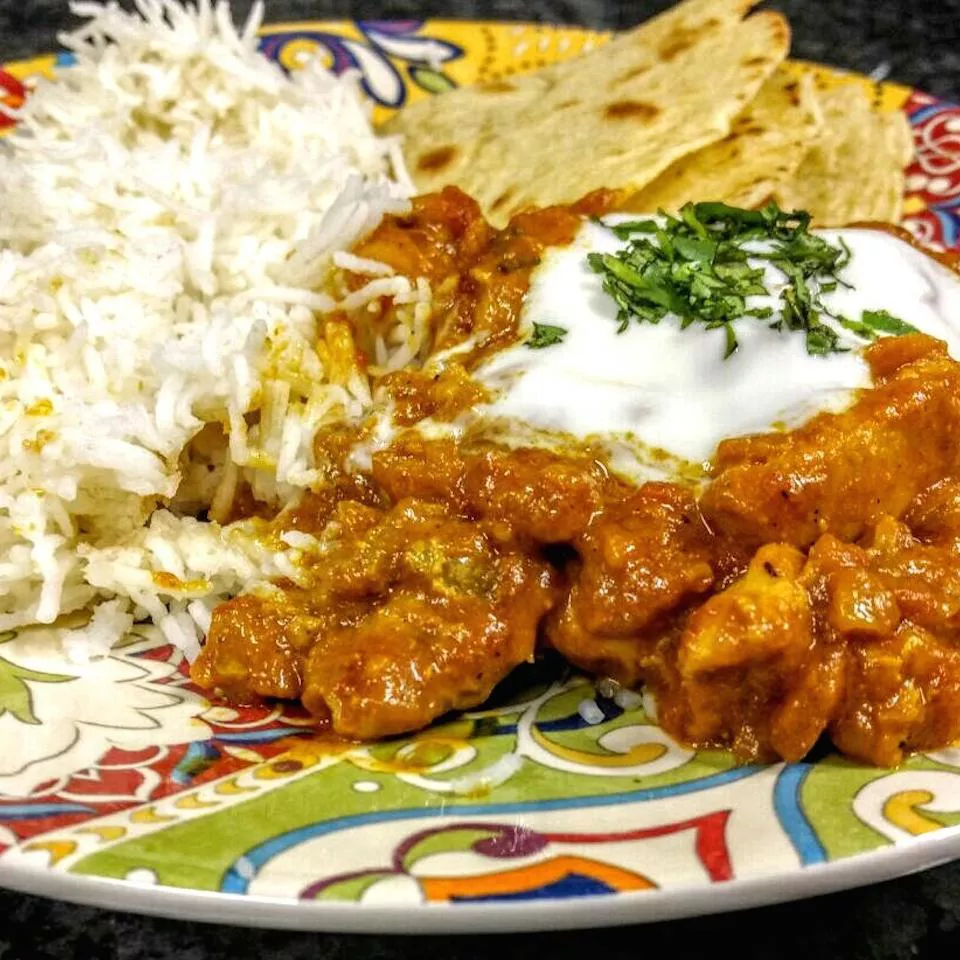

Chicken Curry

Chicken curry or curry chicken is a dish originating from the Indian subcontinent.
It is common in the Indian subcontinent, Southeast Asia, Great Britain, and the Caribbean.
It's pretty easy to make and tastes really good!
Ingredients
- Skinless,boneless chicken breasts
- Garam masala
- Coriander
- Turmeric
- Cayenne pepper
- Tomato
- Yogurt
- Onion
- Fresh minced garlic and ginger
Steps
- Start by partially cooking your seasoned chicken breasts in a large pan,
removing them after they're browned.
-
After setting the chicken breasts aside,
cook garlic, onions, and ginger in the same pan to create the flavor base.
-
Once the onions are translucent, add in spices, tomatoes, yogurt,
and chicken to cook thoroughly.
-
Cover and simmer for about 20 minutes for a wow-worthy chicken curry.
Finish with fresh herbs and a squeeze of lemon.